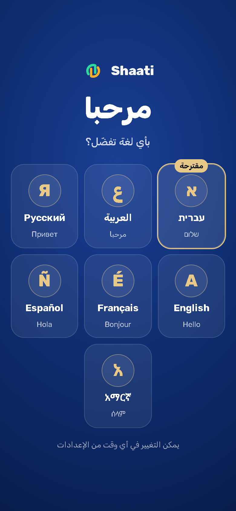

בכניסה הראשונה הדף הוריד את קבצי הגופן המלאים של ערבית, רוסית ואמהרית (245 KB) רק כדי לצייר את דלתות השפה. עכשיו הדלתות מקבלות גרסה מקוצצת של אותם גופנים, רק עם האותיות שמופיעות בהן (27 KB), ומבקשות אותה כבר בשורה הראשונה של הדף. השוואת פיקסלים של הדלתות בכל שבע השפות: 0 פיקסלים שונים בערבית, ברוסית ובאמהרית.

| מדד | לפני | אחרי |
|---|---|---|
| גופנים שהציור הראשון חיכה להם | 245 KB | 27 KB |
| פריסה ראשונה (CPU x4) | 459 ms | 177 ms |
| פיקסלים שונים בדלתות | 0 |